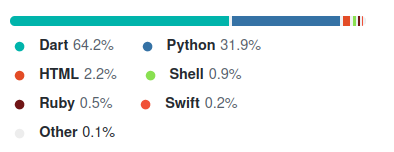
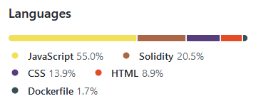

Hello! My name is Dimosthenis Tsormpatzoudis.
I am a MSc Computing student of Imperial College of London. My interests include Machine Learning
and Software Development.
Welcome to my page!
Feel free to visit my
profile to see my recent work and catch up with me on
.
You can contact me at dimost1999@gmail.com
and dimosthenistsormpatzoudis@gmail.com.
Experience
Role : Intern Developer
Organisation : , Thessaloniki, Greece
Responsibilities : Junior Software Developer for Data feed vendor for the shares and derivatives markets of the Athens Stock Exchange.
Programming Skills: Java, SQL and Data analysis.
Duration : 2 5-weeks Internships in the summer of 2020 and 2021.
Organisation : , Thessaloniki, Greece
Responsibilities : Junior Software Developer for Data feed vendor for the shares and derivatives markets of the Athens Stock Exchange.
Programming Skills: Java, SQL and Data analysis.
Duration : 2 5-weeks Internships in the summer of 2020 and 2021.
Education
01/10/2021 - 01/10/2022
Qualification: Master of Science Degree in Computing with Specialization in Software Engineering to be awarded from the Department of Computing, Faculty of Engineering of Imperial College London.
Web address:
Dissertation Title: not yet admitted
Degree Overall Grade: not yet admitted
Qualification: Master of Science Degree in Computing with Specialization in Software Engineering to be awarded from the Department of Computing, Faculty of Engineering of Imperial College London.
Web address:
Dissertation Title: not yet admitted
Degree Overall Grade: not yet admitted
01/09/2017 - 30/07/2021
Qualification: Bachelor Degree (Ptychio) in Informatics awarded from The School of Informatics of the Faculty of Sciences of the Aristotle University of Thessaloniki (AUTH).
Web address:
Course Stream: Artificial Intelligence.
Dissertation Title: Deep Learning and Sentiment Analysis for Financial Data.
Degree Overall Grade: 8.1 (out of 10)
01/09/2014 – 20/06/2017
General Lykeio Apolytirio (Upper Secondary School Certificate)
Hellenic College of Thessaloniki Web
Stream: Economics and Informatics
Apolytirion Overall Average Grade: 19.7 (out of 20) “EXCELLENT”
Stream Subjects: Mathematics, Principles of Economics, Development of Applications in Programming Environment, History, Modern Greek Language, Ancient Greek Language Participation to National admissions Examinations (Panhellenic Exams)
Scored 100/100 in both “Principles of Economic Theory” and “Development of Applications in Programming Environment”, admitted with high ranking - 9th - at the School of Informatics at the Aristotle University of Thessaloniki in 2017.
Awards – Distinctions
Admitted with high ranking - 9th place - at the School of Informatics at the Aristotle University of Thessaloniki in 2017.
Graduated in the top 10 of the year at the School of Informatics at the Aristotle University of Thessaloniki in 2021.
Graduated in the top 10 of the year at the School of Informatics at the Aristotle University of Thessaloniki in 2021.
Publications – Presentations – Projects – Reaserch
Postgraduate level :October 2021 – January 2022 - Master's Degree 1st Semester Group Project
Professor: Dr Shukla Pancham, Computing Department Imperial College London
Project Title: FuelOpt, Software Tool about Fuel Needs
Description: A real time open source Start-Up application about gas stations in London and their availability in various types of fuel. Integrated maps to show the location and direction for desired stations based on use location. This project provided me with a great experience about working for a demanding project with various people each assigned to their role. Learned a lot about cooperating, communicating and being a team player. Also provided me with experience about handling big data and making them integrated with a real-time application. After we presented our work we change the project to open source for anyone to contribute.
Skills used : Dart, AWS, Django
Team project with 8 members
Role : Data management and machine learning specialist
Github page
Programming Languages used based on GitHub:

January 2022 – March 2022 - Decentralized Application
Professor: Dr Arthur Gervais, Computing Department Imperial College London
Project Title: Decentralized Tic Tac Toe game
Description: A live browser game between two Ethereum accounts that deploys a contract to trasfer the funds to the winner. 2 players compete in a tic tac toe game using their Metamask accounts to bet Ethereum coins. The game creates a solidity contract that transfers all the funds to the winner of the game. The application is deployed on Docker and executed through a browser.
Skills used : Solidity, JavaScript, Docker
Github page
Programming Languages used based on GitHub:

Undergraduate level :
March 2021 – July 2021 - 8th Semester Bachelor Degree Dissertation Project, Final grade: 10/10
Deep Learning and Sentiment Analysis for Financial Data.
Professor: Tefas Anastasios, The School of Informatics of the Faculty of Sciences of the Aristotle University of Thessaloniki (AUTH)
Description: Implemented deep learning techniques to predict FOREX and cryptocurrencies time series. Also used sentiment analysis from real Twitter data to provide extra information to my predictions. Gained knowledge about handling big data and implementing prediction algorithms to them. In addition, I acquired experience in sentiment analysis and how it is connected to future indexes movements and also got a good understanding of many financial matters related to stock market and currency exchanging.
My Dissertation is available (in Greek) here.
Skills used : Python, Neural Networks, SQL.
Programming Languages used based on GitHub:
July - September 2020 - 6th Semester Degree Subject: Database Technology, Final grade: 10/10 Professor: Apostolos Papadopoulos, Associate Professor, The School of Informatics of the Faculty of Sciences of the Aristotle University of Thessaloniki (AUTH)
Description: Creating a R* tree Data structure to handle two-dimensional spatial Data from OpenStreetMap.
Gained knowledge about Data Structures and how to use them. I also gained a lot of experience with Java programming language.
Skills used : Java, Data Structures
April - May 2020 – 5th Semester Degree Subject: Pattern Recognition-Statistical Learning, Final grade: 9.5/10 Professor: Ioannis Pitas, Professor, The School of Informatics of the Faculty of Sciences of the Aristotle University of Thessaloniki (AUTH)
Description: Using various machine learning techniques like K-Nearest-Neighbours and Bayes Classification to analyse and gather information from the MNIST Database.
Gathered knowledge about many machine learning algorithms and how to use them appropriately. Learned how to handle Data with R and gained experience with Python , especially in Machine Learning areas.
Skills used : Python , R
November 2020 – January 2021 - 7th Semester Degree Subject: Multi-agent System for Bidding Auction, Final Grade 9.5/10
Professor: Grigorios Tsoumakas, Professor, The School of Informatics of the Faculty of Sciences of the Aristotle
Description: Using different approaches to create agents used for bidding auctions. These agents compete with each other in order to get the best price possible, based on real life data.
Skills used : Python, Reinforcement Learning Understanding.
Team project with 4 members
March 2021 – July 2021 - 8th Semester Bachelor Degree Dissertation Project, Final grade: 10/10
Deep Learning and Sentiment Analysis for Financial Data.
Professor: Tefas Anastasios, The School of Informatics of the Faculty of Sciences of the Aristotle University of Thessaloniki (AUTH)
Description: Implemented deep learning techniques to predict FOREX and cryptocurrencies time series. Also used sentiment analysis from real Twitter data to provide extra information to my predictions. Gained knowledge about handling big data and implementing prediction algorithms to them. In addition, I acquired experience in sentiment analysis and how it is connected to future indexes movements and also got a good understanding of many financial matters related to stock market and currency exchanging.
My Dissertation is available (in Greek) here.
Skills used : Python, Neural Networks, SQL.
Programming Languages used based on GitHub:
July - September 2020 - 6th Semester Degree Subject: Database Technology, Final grade: 10/10 Professor: Apostolos Papadopoulos, Associate Professor, The School of Informatics of the Faculty of Sciences of the Aristotle University of Thessaloniki (AUTH)
Description: Creating a R* tree Data structure to handle two-dimensional spatial Data from OpenStreetMap.
Gained knowledge about Data Structures and how to use them. I also gained a lot of experience with Java programming language.
Skills used : Java, Data Structures
April - May 2020 – 5th Semester Degree Subject: Pattern Recognition-Statistical Learning, Final grade: 9.5/10 Professor: Ioannis Pitas, Professor, The School of Informatics of the Faculty of Sciences of the Aristotle University of Thessaloniki (AUTH)
Description: Using various machine learning techniques like K-Nearest-Neighbours and Bayes Classification to analyse and gather information from the MNIST Database.
Gathered knowledge about many machine learning algorithms and how to use them appropriately. Learned how to handle Data with R and gained experience with Python , especially in Machine Learning areas.
Skills used : Python , R
November 2020 – January 2021 - 7th Semester Degree Subject: Multi-agent System for Bidding Auction, Final Grade 9.5/10
Professor: Grigorios Tsoumakas, Professor, The School of Informatics of the Faculty of Sciences of the Aristotle
Description: Using different approaches to create agents used for bidding auctions. These agents compete with each other in order to get the best price possible, based on real life data.
Skills used : Python, Reinforcement Learning Understanding.
Team project with 4 members
Teams - Societies
CIDL-AUTH : Computational Intelligence and Deep Learning Research Group,
a group of students, dedicated to the research in the fields of computational
intelligence, deep learning, robotics, pattern recognition, statistical machine learning,
digital signal and image analysis and retrieval and computer vision.
Website :
ACM AUTH : A student organised team that carried out many events, workshops and hackathons. This team is part of Association for Computing Machinery (ACM) , the largest international scientific and educational community of informatics.
Website :
Imperial College Data Science Society (ICDSS) : A society for students of Imperial College of London to engage with and learn about Data Science. Data science which encompasses computer science and mathematics–specifically Machine Learning (ML), Artificial Intelligence (AI), statistics, and their applications toward solving problems in various domains.
Website :
Website :
ACM AUTH : A student organised team that carried out many events, workshops and hackathons. This team is part of Association for Computing Machinery (ACM) , the largest international scientific and educational community of informatics.
Website :
Imperial College Data Science Society (ICDSS) : A society for students of Imperial College of London to engage with and learn about Data Science. Data science which encompasses computer science and mathematics–specifically Machine Learning (ML), Artificial Intelligence (AI), statistics, and their applications toward solving problems in various domains.
Website :
Languages
Native Language: Greek
English : excellent Level CEFR: C1 IELTS Academic Exams date 23/01/2021 Overall band: 8 Holder of the University of Michigan Certificate of Proficiency in English, May 2014
Used exclusively in everyday life from October 2021
Other languages :
German : fluent speaking and understanding (2 year of learning)
Ancient Greek : able to read and write (6 years of learning during secondary education)
English : excellent Level CEFR: C1 IELTS Academic Exams date 23/01/2021 Overall band: 8 Holder of the University of Michigan Certificate of Proficiency in English, May 2014
Used exclusively in everyday life from October 2021
Other languages :
German : fluent speaking and understanding (2 year of learning)
Ancient Greek : able to read and write (6 years of learning during secondary education)